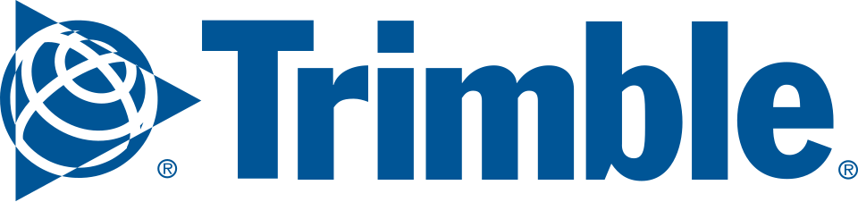

Trimble
Trimble은 건축·엔지니어링·건설, 측량·지도 제작·지리정보, 운송·물류 분야에 하드웨어와 소프트웨어 및 기술 서비스를 제공하는 미국 기업이다.
최종 업데이트

Trimble는 어떤 브랜드인가
이 회사는 위치 측정 기술을 기반으로 여러 산업의 설계, 측량, 시공, 운송 업무에 필요한 하드웨어와 소프트웨어를 개발한다. 사업 범위는 건축·엔지니어링·건설, 측량·지도 제작·지리정보, 운송·물류 분야를 포함한다.
Nasdaq에 공개 상장되어 있으며 S&P 500에 편입된 기업이다. 초기에는 Loran-C와 GPS 장비를 중심으로 성장했고 이후 RTK 측량, GNSS 기반 기계 제어, 3D 모델링과 건설 소프트웨어로 사업을 넓혔다.
Tekla, SketchUp, TMW Systems, Sefaira, Viewpoint, AgileAssets 등의 인수를 통해 소프트웨어와 서비스 역량을 확장했다.
Trimble는 어떻게 시작되고 성장했나
회사는 1978년 11월 Charles Trimble과 Hewlett-Packard 출신 엔지니어 두 명이 Trimble Navigation이라는 이름으로 설립했으며, 처음에는 캘리포니아주 로스앨토스에서 운영했다. 초기에 Hewlett-Packard가 개발을 중단한 Loran-C 항법 기술의 권리를 인수했고, 1982년에는 연간 약 $1 million의 관련 장비를 판매했다.
1980년대 중반부터 GPS 기술 분야에 진출해 해양 시추 측량과 항공기 항법용 장비를 선보였다. 1990년 기업공개를 실시했으며, 이후 RTK 측량 도구와 건설 장비용 GNSS 기술로 영역을 확대했다.
Trimble의 브랜드 아이덴티티는 무엇인가
위치 측정 기술을 건설·측량·운송용 하드웨어와 산업 소프트웨어에 함께 적용한다는 점이 구분되는 특징이다.
Trimble의 대표 제품과 서비스는 무엇인가
건축·엔지니어링·건설 분야에는 설계부터 시공과 운영에 활용되는 하드웨어와 소프트웨어를 제공한다. 측량·지도 제작·지리정보 분야에서는 RTK 측위 도구를 개발했으며, 첫 상용 RTK 제품인 Site Surveyor System을 1993년 출시했다.
Caterpillar와 함께 대형 건설 차량용 GNSS 수신기와 불도저 장착형 도구를 개발했고, 토공 장비용 GPS·레이저 경사 제어 시스템도 판매했다. 소프트웨어 구성에는 Tekla의 BIM 기술, SketchUp의 3D 모델링, Sefaira와 Viewpoint의 건설 관련 기능이 포함된다.
Trimble는 지금 어떤 상태인가
본사는 콜로라도주 웨스트민스터에 있으며 Nasdaq 상장사이자 S&P 500 구성 기업이다. 회사는 Robert G.
Painter가 2020년 1월 4일부터 사장 겸 CEO를 맡도록 발표했다. 2020년에는 Boston Dynamics와 건설 데이터 수집 기술을 Spot에 통합하는 계약을 맺었고, 2021년에는 인프라 자산 관리 SaaS 기업 AgileAssets를 인수했다.
Trimble 로고는 어떻게 변해왔나
자주 묻는 질문
Trimble는 어느 나라 브랜드인가요?
Trimble는 미국의 기술·전자 브랜드입니다.
Trimble는 언제 설립되었나요?
Trimble는 1978년 설립되었습니다.
Trimble의 브랜드 아이덴티티는 무엇인가요?
위치 측정 기술을 건설·측량·운송용 하드웨어와 산업 소프트웨어에 함께 적용한다는 점이 구분되는 특징이다.
Trimble의 대표 제품은 무엇인가요?
건축·엔지니어링·건설 분야에는 설계부터 시공과 운영에 활용되는 하드웨어와 소프트웨어를 제공한다.
Trimble의 본사는 어디에 있나요?
본사는 콜로라도주 웨스트민스터에 있으며 Nasdaq 상장사이자 S&P 500 구성 기업이다.
Trimble의 공식 웹사이트는 어디인가요?
Trimble의 공식 웹사이트는 http://www.trimble.com 입니다.
출처와 검증
Trimble 관련 참고: 공식 웹사이트 · 위키데이터 Q2297063 · 영어 위키백과. 브랜드명은 한글과 원어를 함께 표기하되 데이터에 없는 표기는 만들지 않습니다. 기원 국가·설립연도는 검수된 정의문에서 확인된 값을 우선하고, 없을 때만 공식 웹사이트 URL이 일치하는 위키데이터 개체의 값을 씁니다. 위키데이터 값은 2026-09-12 기준입니다.